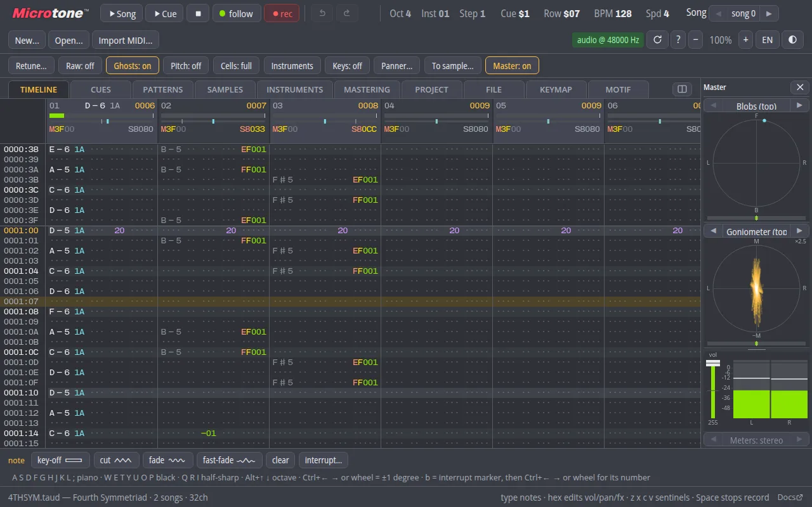
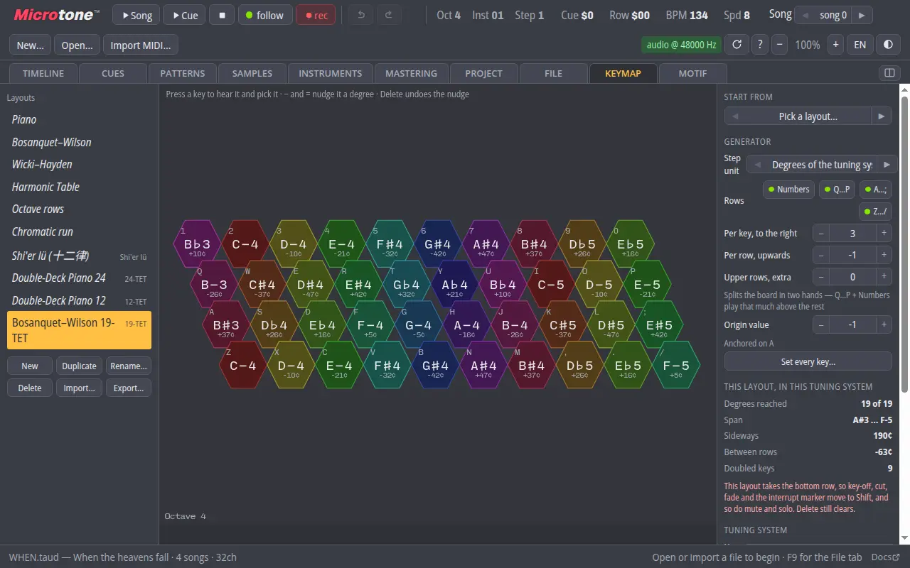
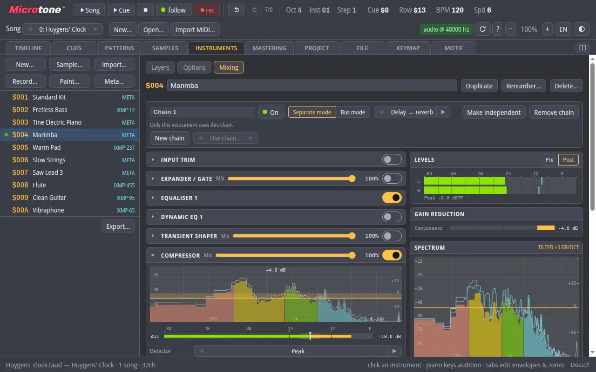
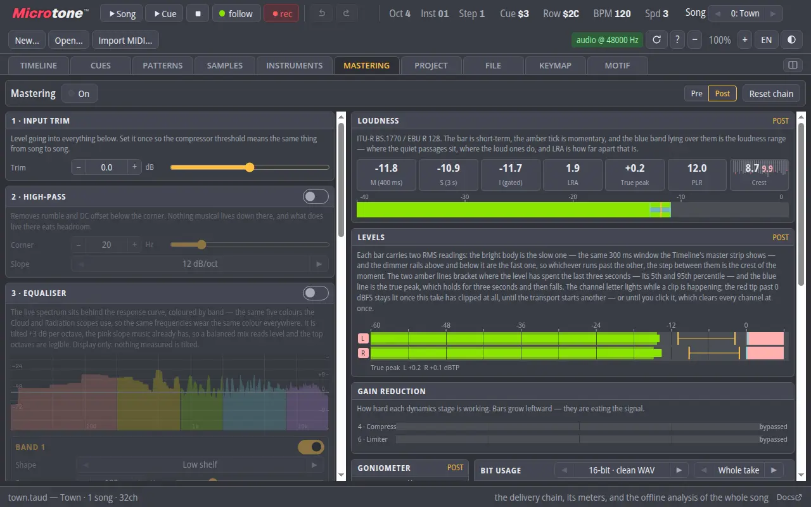

Microtone
Single app
US$0.00/mo incl. VAT
- The tracker, every feature
- Projects kept in your browser
- Online projects, if you sign in
Microtone
A music tracker for the notes a piano cannot play. Every pitch sits on a grid of 4096 steps per octave, so 19-TET, 31-TET, Bohlen–Pierce and the twelve lü are as at home as twelve. It runs in a browser tab, and that is the entire install.
Starting at US$0.00/mo. Annual plan, paid monthly, cancel by closing the tab.

Trusted by creative professionals at
01
The tracker. Patterns, cues, a mastering chain and a keyboard laid out as a hexagonal lattice, in a browser tab.
OpenA sketchpad for phones and tablets: an isomorphic keyboard, eight lanes and a grid cut down to the notes. Everything you liked about the tracker, minus most of it.
OpenWrite a whole song as a program. For when placing every note by hand was not taking long enough.
Read the languageThe player on its own, for games and pages: a transport, one fader per lane, and the song’s own interrupts. LGPL-3.0. There will not be a second fader.
Get the libraryThe same tracker in a window that is not your browser, for Linux, Windows and macOS. It updates itself, which is more than can be said for its workflow.
Download02
Pick 12, 19, 24, 31 or 41-TET, Shi’er lü or Bohlen–Pierce, or draw your own in the Notation Maker, and the editor writes, shows and steps in its degrees. Retune a whole song from one tuning to another without rewriting a note.
Your computer keyboard becomes a forty-key isomorphic instrument — Bosanquet–Wilson, Wicki–Hayden, Harmonic Table — fitted to whatever the song is in. We cannot, however, guarantee that your audience will remain in the room.

03
A song chooses stereo, the full circle or the full sphere, and the pan column carries a real angle. Each lane is a source at an azimuth and a height, auditioned over headphones as you write.
Export stereo, quadraphonic, 5.1, 7.1 or ambisonic B-format from first to third order — or stems, one WAV per lane in a ZIP. The music is still in 43-TET. It is merely coming from above you now.
04
Every instrument gets a chain of its own — equaliser, dynamic EQ, compressor, saturator, unison, delay, reverb — ahead of the master bus, with meters on its own signal. Instruments that name one chain share it.
Envelopes, filters, panning and note-stealing per instrument, plus metainstruments: a layered kit that sounds several instruments side by side, or an FM rack that wires them into one another. SoundFont patches come in with every zone they brought.

05
Trim, high-pass, EQ, compressor and limiter, metered the way a mastering engineer asks for: short-term and integrated loudness, loudness range, true peak, crest, gain reduction. The chain you hear is the chain the export renders through.
There is an offline analysis of the whole song as well, so you can learn exactly how loud your 31-TET waltz is before anyone else has to.

06
Motif builds a whole project — instruments, lanes, patterns, the master chain — from a program in the Taud Motif Language. Music is a value; a song is what its lines say, in any order.
A build is deterministic: the same program makes the same file, byte for byte, in your browser and on a server. Its randomness is seeded and written down. This makes Motif the most reproducible part of the whole process, the composer included.
// Huygens' Clock — 31-TET, 7/8 (2+2+3)
let THEME_MINOR = """
D5:2 Fp5:2 G5:2 A5:2 ~Cp5:6v |
A5:3 G5:1 Fp5:4v D5:4v E5:2 |
F5:2 D5:2 G#5:6v F5:2 G#5:2 |
A5:4v Gp5:4v E5:2 C#5:2 E5:2
"""
melody(lead, at(9), THEME_MINOR, vol: 55)
let THEME_MAJOR = replace(THEME_MINOR, "Fp5", "F#5")
melody(flute, at(49), THEME_MAJOR, transpose: 31)Fp5 is a note a piano does not have. That is the point.07
MOD, S3M, XM and IT open as projects, down to minute details; so do AdLib’s .ims and .mon. Import MIDI renders a .mid through a SoundFont, and a General MIDI bank ships with the app so it sounds before you go looking for one.
If your module uses an obscure feature from an obscure tracker released by three people in 1997, please consider preserving that tracker as a virtual machine. Invert Loop and Funk Repeat, however, work exactly as they do in ProTracker, so there’s that.
08
New
It does nothing. Microtone has no generative AI in it. It will not write your chorus, suggest a chord, master your track from a text prompt, or finish your song while you sleep. Every note in a Microtone project was put there by someone who meant it — or by a random number generator they seeded and named themselves.
| Generative credits per month | 0 |
|---|---|
| Models | 0 |
| Your music used to train them | Not possible; see above |
| Hallucinated notes | Only the ones you wrote |
| Whose fault the song is | Yours |
09
Single app
US$0.00/mo incl. VAT
Most popular4
Everything on this page
US$0.00/mo incl. VAT
Phone plan
US$0.00/mo incl. VAT
Per seat, billed annually
US$0.00/seat/mo
Proof of enrolment not required
US$0.00/mo
Site licence
Contact sales
| Account required | No |
|---|---|
| Telemetry | None |
| Subscription | None |
| Install | None, or one, if you would rather |
| Cloud storage | Your browser’s own; online projects if you sign in |
| Early termination fee | None. Leave whenever. We’ll be fine. |
| Source code | All of it, under the GPL |
| Support | A manual. A long one. |
10
You don’t. Existing products like Renoise offer a much more modernised workflow. Microtone’s workflow is stuck firmly in the Impulse Tracker era, and we see no compelling reason to fix what wasn’t broken in 1995.
No. We believe in the freedom to make your own mistakes, one cell at a time.
Yes. Microtone supports an absurd variety of equal divisions of the octave, including ones you probably won’t enjoy listening to. Whether you’re composing in 19-EDO or 43-EDO, we’ve got you covered. We cannot, however, guarantee that your audience will remain in the room.
We don’t know. But we made it work anyway.
Yes. You can build mixing chains, tweak your instruments, and route audio in all sorts of interesting ways. We even support ambisonics, in case you want to make your weird music weird in three dimensions.
Probably. We support several familiar module formats, namely IT, S3M, MOD and XM, down to minute details. If your module uses an obscure feature from an obscure tracker released by three people in 1997, please consider preserving that tracker as a virtual machine. Invert Loop (PT 1.2+) and Funk Repeat (~PT 1.1), however, work identically to ProTracker, so there’s that.
If you learned Impulse Tracker in 1997, welcome home. If you didn’t, our 1.3-megabyte, text-only documentation might help. We wrote it in an attempt to spare you from learning everything the harder way, which is how we did it.
No.
No.
No.
We made it ourselves.
Yes. You can inspect the source code, study our questionable decisions, and fork the project to make the tracker you actually wanted.
Absolutely not. We combined a workflow from the 1990s, a browser, some modern audio technology, and an unreasonable interest in alternative tuning systems. Then we spent a frankly disproportionate amount of time making the whole thing work.
People who want to make music in unusual tuning systems, tracker enthusiasts who prefer patterns to piano rolls, and anyone who has ever thought, “Surely someone has made a native n-EDO tracker at some point.”
There are plenty of excellent alternatives. Go use them. We’ll be fine.
Microtone. A music tracker for people who know exactly what they want to do, even if nobody else understands why.